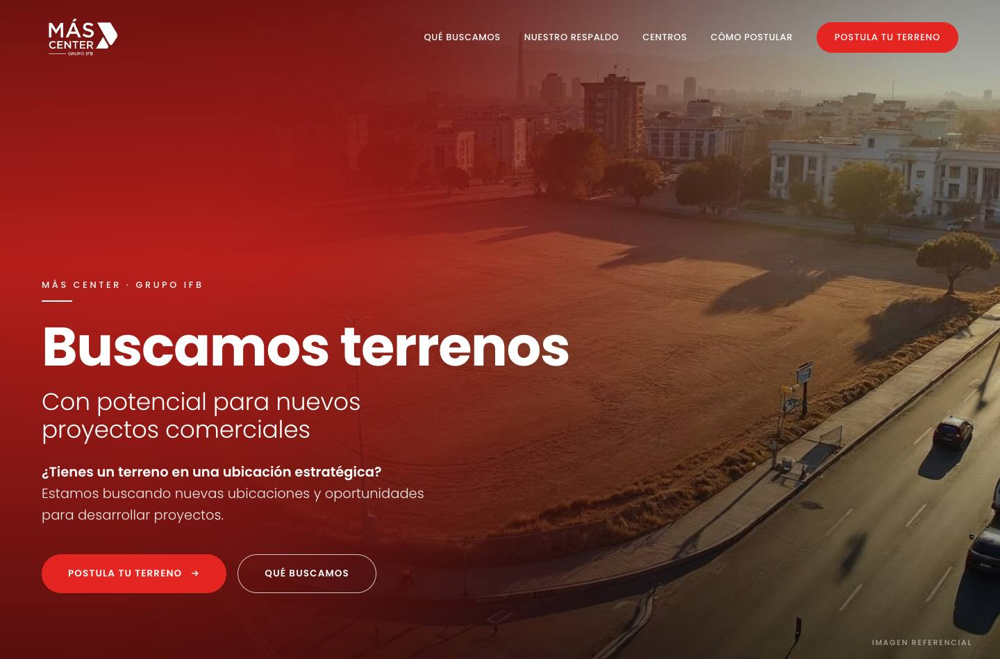
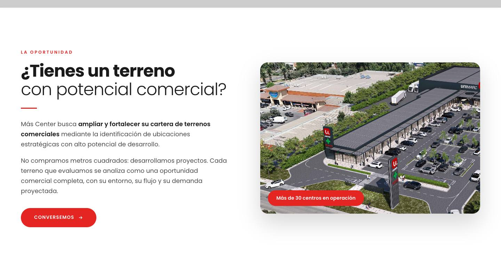
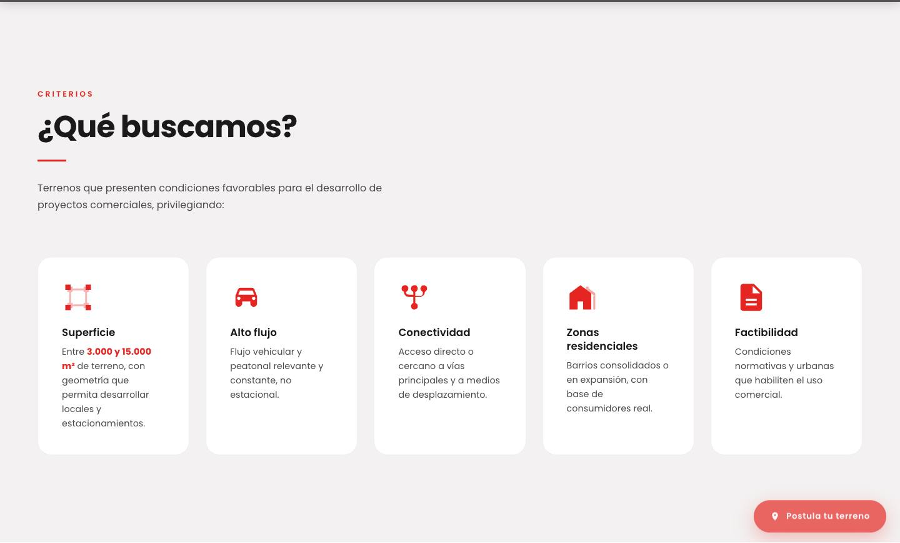
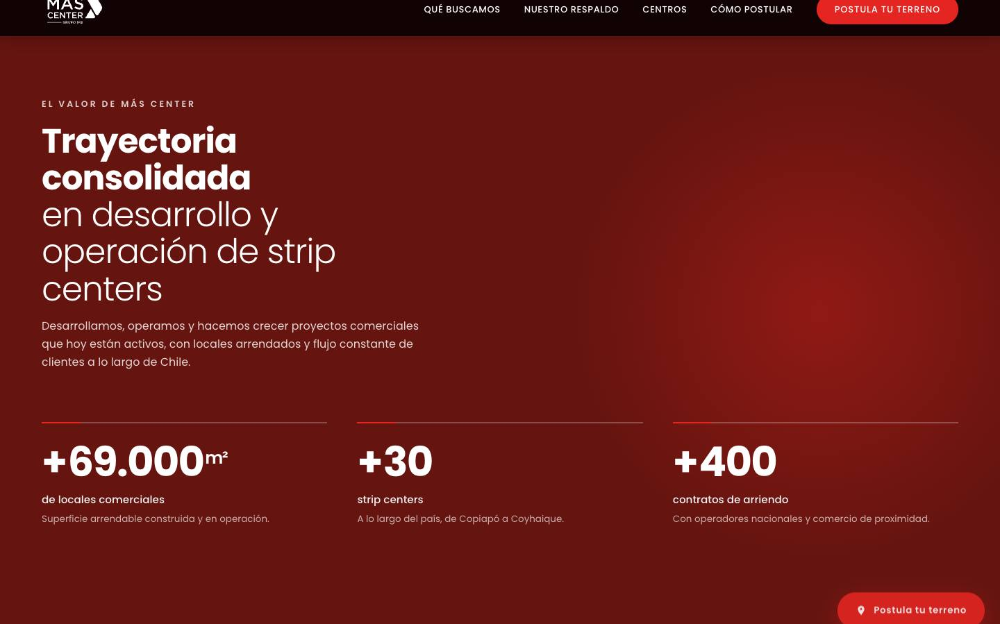
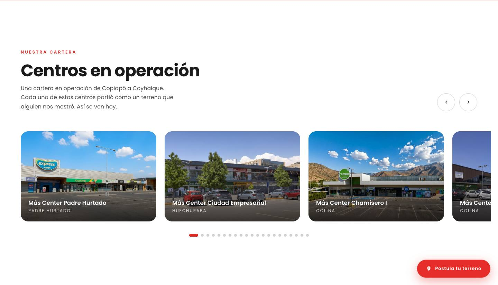
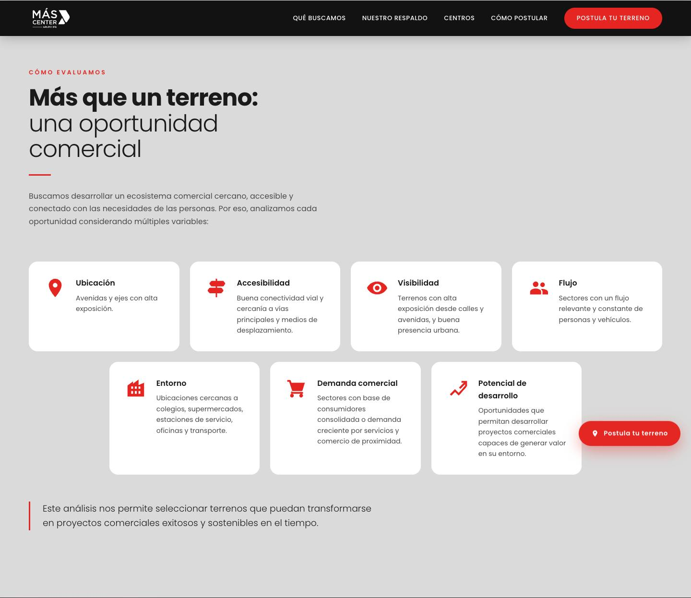
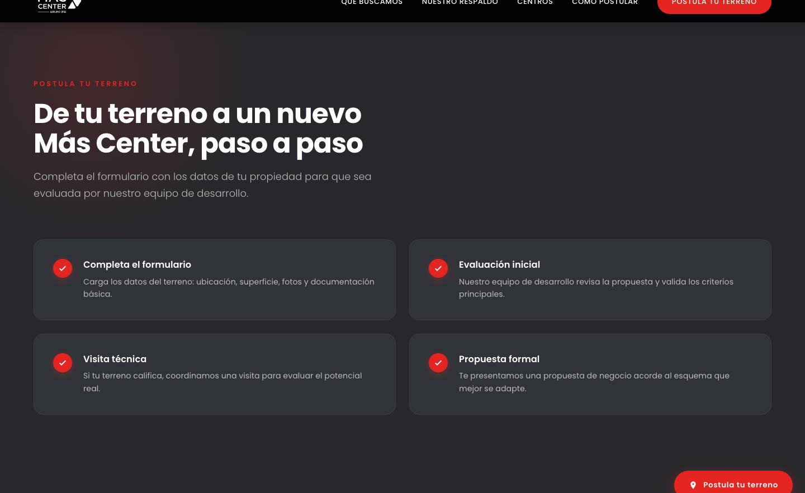
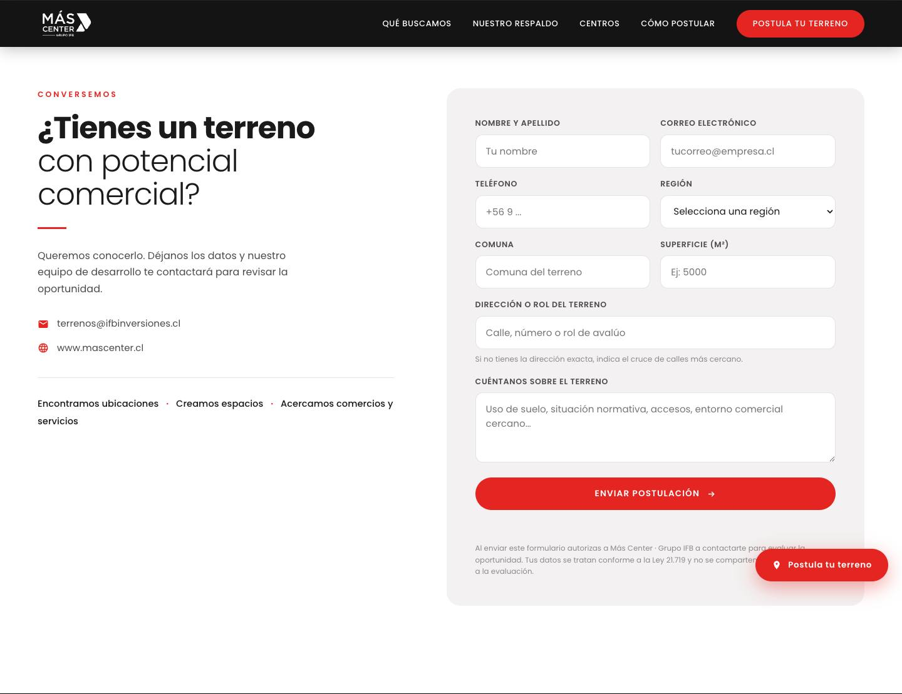
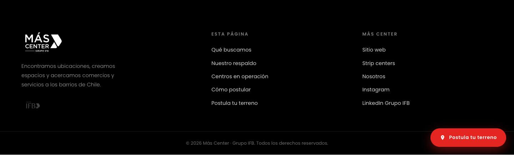

La página ya está diseñada, aprobada y funcionando. Esto no es un diseño para interpretar: es la página terminada, cortada en 13 bloques para que la montes en WordPress uno por uno, con sus fotos y sus tipografías ya en el formato correcto.
Abre sitio-completo.html con doble clic. Eso es exactamente lo que tiene que quedar
publicado: mismo orden, mismos textos, mismos colores, mismas animaciones. Si en algún momento
dudas de cómo va algo, la respuesta está ahí.
Cuatro cosas y nada más. No hay archivos de trabajo, ni versiones viejas, ni material que no se use en la página.
Cada archivo de secciones/ empieza con un comentario que dice qué sección es, qué
fotos usa y qué hay que tener en cuenta. Ese comentario puedes pegarlo igual:
no se ve en la web. Después viene el <style> de esa sección y su HTML.
Hay tres formas de publicarla. Las tres dan el mismo resultado visual; cambia cuánto trabajo es y cuánto se puede editar después desde el panel.
Una página nueva a ancho completo y 13 bloques de HTML personalizado, en orden: estilos base, las 11 secciones y los scripts.
≈ 45 minutos · se edita por bloquesUn solo bloque de HTML personalizado con el contenido completo de
sitio-completo.html.
Subir la carpeta por FTP a un subdominio (terrenos.mascenter.cl). No hay que
tocar ninguna ruta.
Si el cliente va a querer cambiar textos o fotos desde el panel, ve por el camino A. Cada sección queda en su propio bloque, se reordena arrastrando y se edita sin tocar el resto. Los pasos 3 a 6 de este instructivo son ese camino. Para el B y el C, haz los pasos 3 y 4 y salta al 7.
Todo lo que la página necesita está en recursos/. Nada se descarga
desde un servidor externo: ni Google Fonts, ni librerías, ni CDN.
| Carpeta | Qué es | Cuánto pesa | Cómo subirlo |
|---|---|---|---|
imagenes/ |
La foto de portada, la aérea de la intro y las 23 fotos de los centros en operación
(dentro de imagenes/centros/). |
4,6 MB | Biblioteca de Medios |
logos/ |
Más Center blanco (SVG), Grupo IFB (PNG) y el favicon. | 32 KB | Biblioteca de Medios |
tipografias/ |
Poppins en 5 pesos, formato WOFF2. | 40 KB | Por FTP, ver abajo |
.svg por defecto. O
instalas Safe SVG, o subes el logo blanco por FTP igual que las tipografías. Es un solo
archivo: logo-mascenter-blanco.svg..woff2. Tampoco están permitidas en la Biblioteca
de Medios. Súbelas por FTP a /wp-content/uploads/terrenos/tipografias/ y deja las
cinco juntas ahí.Sube la carpeta recursos/ completa por FTP a
/wp-content/uploads/terrenos/ y te ahorras los dos problemas de arriba de una vez.
Queda todo junto, con los mismos nombres, y las rutas del paso 4 quedan predecibles. Además te
evita que la Biblioteca de Medios te renombre alguna de las 23 fotos de centros.
Los archivos vienen con rutas relativas para que se puedan abrir en el computador. En WordPress hay que apuntarlas a donde quedaron los recursos.
Abre los archivos de secciones/ en un editor de texto y haz un
buscar y reemplazar antes de pegar:
Si vas por el camino B (todo de una), el prefijo es recursos/ sin los dos puntos,
porque sitio-completo.html está un nivel más arriba:
Después del reemplazo, una ruta cualquiera tiene que verse así:
Las tipografías se llaman desde el CSS con url('../recursos/tipografias/…'), dentro
de 00-estilos-base.html. El buscar y reemplazar también las arregla — pero si el CSS
lo pegas en Apariencia → Personalizar → CSS adicional, revisa que esas cinco rutas
quedaron absolutas: desde ahí una ruta relativa apunta a la carpeta del tema y las tipografías
no cargan.
La landing trae su propia cabecera y su propio pie. Si además se muestran los del tema, quedan dos menús y dos footers.
/postula-tu-terreno/.Este es el trabajo. Un bloque de HTML personalizado por archivo, en este orden exacto. Cada archivo se pega completo, tal como está, sin sacarle nada.
1. 00-estilos-base.html va primero, una sola vez. Sin él ninguna
sección se ve bien.
2. 99-scripts.html va último, una sola vez. Sin él no hay
animaciones, ni contadores, ni carrusel, ni menú de celular.
Logo blanco a la izquierda y menú a la derecha. Transparente sobre la portada, se oscurece al bajar. En celular se convierte en menú hamburguesa.

Foto aérea de un terreno con un velo oscuro encima y el titular. Los dos botones bajan al formulario y a «Qué buscamos».

Texto a la izquierda, foto aérea de un centro en operación a la derecha.

Las condiciones del terreno: superficie, ubicación, accesos y uso de suelo. Sin imágenes: son tarjetas de texto sobre fondo claro.

Los números suben solos cuando la sección aparece en pantalla.
data-a de cada
número. Si cambia una, hay que cambiarla ahí y no en el texto visible.
Carrusel con los 23 centros. Se arrastra con el mouse y con el dedo; las flechas y los puntos también funcionan.

Las variables que el equipo evalúa antes de decidir. Solo texto.

Los cuatro pasos del proceso, sobre fondo oscuro.

Los datos de contacto a la izquierda y el formulario de postulación a la derecha.
terrenos@ifbinversiones.cl, en el enlace
mailto: y en el texto visible. Y acá va el trabajo del paso 8: el formulario
todavía no envía.
Logos, enlaces internos, enlaces al sitio y a las redes de Más Center, y la barra de copyright con el año que se pone solo.
Aparece al bajar y acompaña al visitante hasta el formulario.
99-scripts.html en su propio bloque de HTML personalizado, al final de
todo. No usa jQuery ni ninguna librería externa.
Es lo único del paquete que queda a medio camino, y es a propósito: el envío depende del correo y de los plugins del WordPress de ustedes. Hoy el formulario valida los campos y muestra el mensaje de gracias, pero no manda nada.
| Campo en pantalla | name | Tipo | Obligatorio |
|---|---|---|---|
| Nombre y apellido | nombre | texto | Sí |
| Correo electrónico | email | correo (valida formato) | Sí |
| Teléfono | telefono | teléfono | Sí |
| Región | region | lista con las 16 regiones | Sí |
| Comuna | comuna | texto | Sí |
| Superficie (m²) | superficie | número | Sí |
| Dirección o rol del terreno | direccion | texto | Sí |
| Cuéntanos sobre el terreno | mensaje | área de texto | Sí |
name. Si duplicas uno existente, ajusta los nombres: el CSS y el aviso de error
dependen de ellos.terrenos@ifbinversiones.cl — el buzón de
captación de terrenos. No es el correo general de Más Center.09-formulario.html, reemplaza todo el bloque
<form class="formulario">…</form> por el shortcode
[contact-form-7 id="XXX"].formulario en el <form> que genera CF7 —se
configura en Additional Settings, o envolviéndolo en un
<div class="formulario">—. El CSS ya está escrito apuntando a
form.formulario input, textarea, select, así que los campos de CF7 se van a ver
exactamente igual sin tocar nada más.terrenos@ifbinversiones.cl.
No se publica sin esa prueba.El texto legal bajo el formulario («Al enviar este formulario autorizas a Más Center · Grupo IFB a contactarte…») tiene que quedar visible. No lo saques por espacio.
Esto no va en el HTML de las secciones: lo maneja el plugin de SEO y el
personalizador del tema. Los textos exactos están al final de
TEXTOS-PARA-COPIAR.txt.
| Dónde | Qué poner |
|---|---|
| Título SEO (Yoast / Rank Math) |
Postula tu terreno — Más Center | Buscamos terrenos con potencial para nuevos proyectos comerciales |
| Meta descripción | Más Center busca terrenos entre 3.000 y 15.000 m² con potencial para nuevos proyectos comerciales. Más de 30 centros, 69.000 m² de locales y 400 contratos de arriendo, de Copiapó a Coyhaique. |
| Imagen para compartir (Open Graph) |
imagenes/terreno-hero.jpg |
| Favicon (Personalizar → Identidad del sitio) |
logos/favicon.png |
| Idioma de la página | es-CL |
Por si hay que crear algo nuevo después. Los colores salen del manual de marca de Grupo IFB 2023 y están cruzados con el CSS del sitio de Más Center en vivo.
#E52521#C81E1A#65140F#26282C#DADADA#F3F1F1#1A1A1A#000000Tipografía: Poppins, en cinco pesos — 300 Light, 400 Regular, 500 Medium, 600 SemiBold y 700 Bold. Es la del manual y la misma que carga el sitio de Más Center. Va auto-hospedada para no depender de Google Fonts.
Si el tema ya carga Poppins en esos cinco pesos, puedes borrar el bloque @font-face
del principio de 00-estilos-base.html y la página se ve igual. Si carga solo tres
pesos, no lo borres: los títulos Light y los botones SemiBold cambian de forma.
La página se revisó en 1440, 768 y 390 px de ancho, sin desborde horizontal y sin errores de consola. Lo que hay que volver a mirar es lo que cambia al montarla en WordPress.
Tres cosas que no dependen de quien maquetea, pero que conviene resolver antes de mandarle el enlace al cliente.
mascenter-terrenos.vercel.app. Lo natural
es terrenos.mascenter.cl, o una página dentro del WordPress actual en
/postula-tu-terreno/.Datos que quedaron escritos en la página: terrenos@ifbinversiones.cl · www.mascenter.cl · Instagram @mascenter · LinkedIn Grupo IFB. Están en las secciones 09 y 10.
Landing de captación de terrenos · Más Center — Grupo IFB · entregada el 08-09-2026. Cualquier
duda de maquetación, la respuesta está en sitio-completo.html.